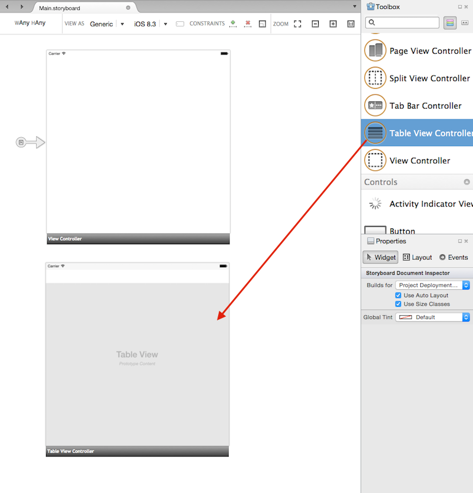
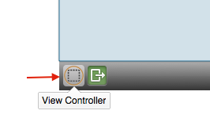
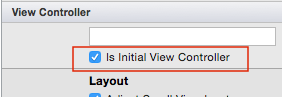
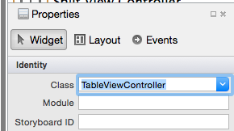

Duration
~15 minutes
Goals
The primary goal of this lab will be to create a new iOS application and add a UITableView control, first in code, then using the Storyboard designer.
Required assets
There is a completed version of the exercise in the Part 01 Resources folder if you'd like to just watch the instructor and not do the exercise in tandem.
Challenge
This is a group exercise, intended to be done live with an instructor. Here are the high-level steps we will be working through:
- Create a new Xamarin.iOS application using Xamarin Studio or Visual Studio.
-
Add a
UITableViewto the View Controller code behind, setting it to fill the entire screen. Run and verify the control is present. - Add a second screen to the storyboard and set it as the initial view controller.
-
Change the View Controller type to be a
UITableViewControllerand add a code-behind file to go with it. Run and verify the Table View is present.
Steps
Below are the step-by-step instructions to implement the exercise.
Create a new Xamarin.iOS application
As a first step, we are going to create a Xamarin.iOS application to work on.
- Open Xamarin Studio or Visual Studio.
- Create a new Unified API C# > Single View App, name the application "MailBox".
Add a UITableView in code
There are multiple ways to add a Table View to the application - we will start with the code-based approach.
-
The application should have a single
UIViewControllerin the source structure - depending on the version and the IDE you are using it will have different names, but it will often have "ViewController" as part of the name. Locate this source file in the solution and open it. -
Locate the
ViewDidLoadoverride - this is the method which is called once the Storyboard visualization has been inflated into memory and is our first opportunity to really interact with theUIViewfor this controller. -
Create a new
UITableViewobject and store it in a private field in the class (this gives you access to it later).-
Pass in the
View.Frameproperty as the frame constructor parameter. This will ensure the Table View starts as the same size as its parent view.
-
Pass in the
-
Add the Table View to the view graph - there are three methods you can use, all of them do exactly the same thing:
-
UIViewController.Add- there's anAddmethod on every View Controller. It callsView.AddSubview. -
UIView.Add- there's anAddmethod on every View. It also callsView.AddSubview. -
UIView.AddSubview- this is the real method in iOS and is what you would call if you were working in an Apple language.
-
- You can check your code with the hint below. Run your application - you should see a Table View in the UI!
- Try rotating the device (or simulator). Notice that the Table View doesn't properly rotate. Let's fix that by applying some constraints - you can learn more about constraints in iOS300.
- Add the following code after you have added the view. This will lock the Top/Left corner of the Table View to its superview and make sure the Width and Height are always kept synchronized. You can just copy/paste the code - it's not important to completely understand what's happening for this class.
- Run the app once more and try rotating the device - it should now rotate properly.
Why are there three methods to add a view?
// This assumes your TableView is in a field named "tableView"
tableView.TranslatesAutoresizingMaskIntoConstraints = false;
this.View.AddConstraint(NSLayoutConstraint.Create(tableView, NSLayoutAttribute.Top,
NSLayoutRelation.Equal, this.View, NSLayoutAttribute.TopMargin, 1, 0));
this.View.AddConstraint(NSLayoutConstraint.Create(tableView, NSLayoutAttribute.Left,
NSLayoutRelation.Equal, this.View, NSLayoutAttribute.Left, 1, 0));
this.View.AddConstraint(NSLayoutConstraint.Create(tableView, NSLayoutAttribute.Width,
NSLayoutRelation.Equal, this.View, NSLayoutAttribute.Width, 1, 0));
this.View.AddConstraint(NSLayoutConstraint.Create(tableView, NSLayoutAttribute.Height,
NSLayoutRelation.Equal, this.View, NSLayoutAttribute.Height, 1, 0));
Add a UITableView in the Storyboard designer
Let's try a different approach and use the Storyboard designer to create our Table View. We will be using the Table View Controller.
- Open the Main.storyboard file - this is the main screen for the application.
- It should have a single screen in the storyboard currently. We will be leaving that one in place and adding a second screen. Zoom out a bit to give yourself some room using the Zoom tool bar at the top of the designer screen.
- Locate the Toolbox and scroll through it until you find the Table View Controller item. This is both a View Controller and a Table View together and is, by far, the easiest way to create a screen with a Table View.
- Drag the Table View Controller from the Toolbox onto the designer surface into an empty space as shown in the following screen. 
-
This new screen is a 2nd screen added to the application. The original View Controller is still the initial view controller, or starting view controller. To change that, we have two options:
- The "handle" next to the View Controller indicates which one is the initial view controller and you can drag this between different view controllers to change which one you want to show initially.
- Alternatively, you can select the View Controller object in the storyboard by clicking the first button in the black bar across the bottom of the View Controller control in the designer (shown below),  or in the Document Outline window and then check the "Is Initial View Controller" property. 
-
As a final step, let's create our derived
UITableViewControllerfrom the storyboard design. Select the Table View Controller in the designer - either by clicking the black status bar on the bottom of the controller, or by selecting it in the document outline. - In the properties window, assign the Class property to a new name - "TableViewController". When you press ENTER, the system will generate a new C# source file with that name and tie it to this view controller. This is where we can place our logic for the screen in the next exercise. 
-
If you open the new source file, it won't have much in it beyond the required constructor. The parameterized constructor that takes an
IntPtris required to instantiate the controller from a Storyboard. You will see this constructor form anytime iOS will be instantiating the object through the Objective-C runtime. If it is missing, the runtime will throw an exception. -
With the new Table View Controller as the initial view controller, run the application again and verify that you see a Table View. Try rotating the device, it should work just fine because the
UITableViewis automatically resized by the Table View Controller - this is perfect as long as you want it to be full-screen.
What about dragging in a Table View?
Summary
In this exercise, you created a Xamarin.iOS application and added a UITableView in both code-behind and in the Storyboard designer with a UITableViewController.